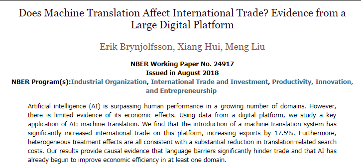
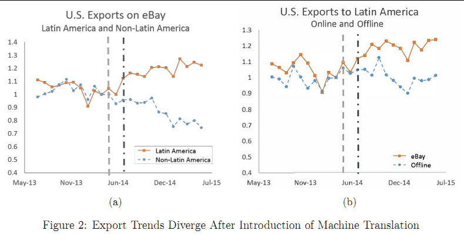

<NBER> 인공지능이 해외직구를 늘린다?

인공지능의 영향에 대한 흥미로운 연구 페이퍼가 있어서 소개합니다.

NBER에서 2018년 8월에 나온 Working Paper입니다. 기계와의 경쟁, 제2의 기계시대 등으로 많이 알려진 MIT의 에릭 브린욜프슨 교수와 함께 2명의 저자가 함께 쓴 보고서 입니다. NBER의 11월 Research Digest에서 다루어서 우연히 보게되었습니다.

해당 연구는 바둑이나 사물인식 등 최근 인공지능이 인간의 능력을 앞서는 분야가 늘어나고 있는 상황인데, 이것의 경제적 효과에 대한 증거를 제시하는 연구가 없다는 점에서 시작한 연구라고 합니다. 연구자들은 이베이(eBay)의 거래 데이터를 이용해서 이베이가 인공지능 기반의 번역(machine translation)을 도입한 이후 얼마나 해외 직구가 많이 늘어났는지를 살펴보았습니다. 그 결과 이베이의 라틴 아메리카 매출(해외직구)이 이전에 비해서 17.5%가 늘어난 것으로 나타났습니다. 인공지능에 기반한 번역 소프트웨어의 성능 향상이 번역과 관련된 탐색 비용(translation-related search costs)을 줄여준 결과로 나타났습니다. 이들은 이러한 연구 결과가 언어 장벽이 국제 무역을 막고 있는 중요한 원인 임을 보여주는 것이며, 인공지능이 이러한 장벽을 낮춤으로써 경제적 효율성을 높이는데 기여하고 있음을 보여준다고 밝히고 있습니다.
개인적으로 중국 알리바바의 글로벌 전자상거래 플랫폼 서비스인 알리 익스프레스를 자주 이용합니다. 위 연구와 유사한 경험을 할 수 있는데요.
먼저, 상품명이 때로는 어색한 번역들이 있기는 합니다면, 대부분은 충분히 이해할 수 있을 정도로 번역을 해주어서 상품을 사는데 크게 지장이 없었던 경험이었구요. 또한, 구매 후기를 보면, 러시아, 브라질, 스페인 등등 전세계 각국의 사람들이 후기를 남겨놓을 것을 볼 수가 있고, 이를 또한 한글이나 영어 등으로 번역한 결과를 읽을 수도 있습니다.
해외 구매가 국내 구매에 비해서 여러가지 위험 요인들이 많기에 불안한데, 저런 번역된 정보는 상품을 구매하는데 중요한 영향을 주었다고 생각됩니다.
이렇게 경험 정도로 그치는 문제를 가설을 가지고, 데이터를 분석해서 결론을 이끌어 내는 모습은 연구자의 중요한 자질로 생각됩니다. 최근에 NBER 페이퍼들을 보면 비전통적인 데이터를 가지고 기존 답하지 못한 문제들에 대한 결론을 내는 시도들을 많이 보게 됩니다. 크게는 빅데이터라고 불리고, 작게는 사람의 행위 데이터(bahavior data)에 대한 연구자들의 접근이 확대되면서 나타나는 현상이라고 생각됩니다. 우리나라에도 여느 나라 못지않게 디지털화가 진행되고 축적되는 데이터도 많아지는 만큼 비슷한 시도들이 더 많아 지면 좋겠네요.
)